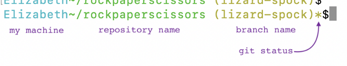
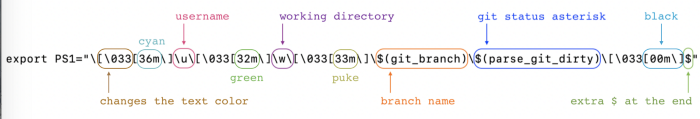

Update your Mac Terminal to display your current git branch and status
TLDR; You can copy all the code from my github.
I spent the better part of a crafting day at the office updating my .bash_profile on my Mac. If I’m in a git repository, with every command prompt, I see the branch name and an asterisk if there are un-committed changes. The original prompt for the machine, the repository name, and the branch name each appear in different colors. Here’s what it looks like:

It may look like this one line in my .bash_profile file is where the magic happens, because this is where the colors are set:
export PS1="\[\033[36m\]\u\[\033[32m\]\w\[\033[33m\]\$(git_branch)\$(parse_git_dirty)\[\033[00m\]$"

Unfortunately the colors, branch, and status still need to be variously activated and calculated.
This function calculates if the branch has new changes:
function parse_git_dirty {
[[ -n "$(git status -s2> /dev/null)" ]] && echo "*"
}
The last thing is fetching the branch name:
git_branch() {
git branch 2> /dev/null | sed -e '/^[^*]/d' -d 's/* \(.*\)/ (\1)/'
}
It took a lot of internet searching and help from colleagues to set it up. I had the git status and the branch name going separately, but combining them failed. Typing past the width of the window in the command prompt would send text to overwrite the current line instead of wrapping onto a second. This solved that for me. There are also other color options. The slashes \ help end commands, but it was a lot of trial and error to get them all in the right spots. I was editing my .bash_profile intially in Sublime; any plain-text editor would have worked. I moved to nano in the Terminal when I wanted to see the changes more quickly. I did still have to close all open Terminal sessions before seeing the latest changes.
This lovely command prompt doesn’t prevent every mistake, but it does help call my attention to the status so I don’t:
- open the wrong repository (easy to do when you’re migrating from one to another)
- try to commit before the changes are saved
- commit to master instead of a branch
If nothing else, I enjoy a bit of color in an interface that doesn’t have any to start.
Thanks to Maik Nog for suggesting I share this in a more shareable format. It’s available on github.